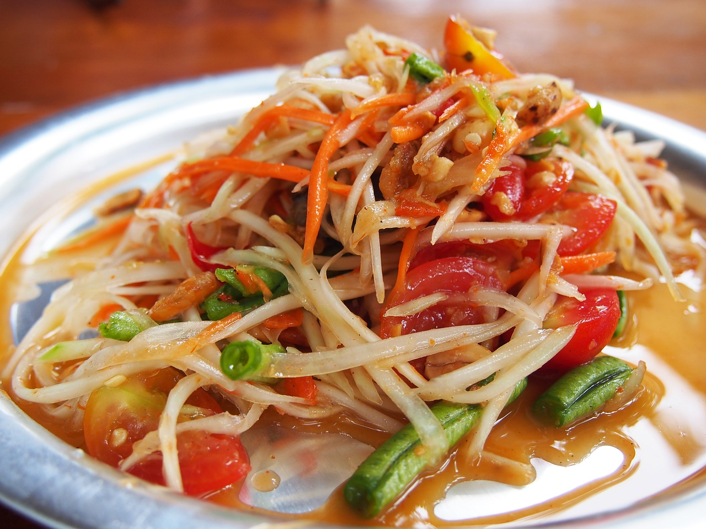

Papaya Salad Home

Description:
Thai Papaya Salad, or Som Tum, is a vibrant and refreshing dish made from shredded unripe papaya mixed with
a bold blend of flavors. The crisp papaya strands are combined with garlic, chilies, lime juice, fish sauce,
and palm sugar, then tossed with juicy tomatoes, crunchy long beans, roasted peanuts, and sometimes dried
shrimp.
This unique mix creates a perfect harmony of tangy, salty, sweet, and spicy notes, making it one of Thailand’s
most beloved salads.
Thai Papaya Salad, or Som Tum, is a vibrant and refreshing dish made from shredded unripe papaya mixed with a
bold blend of flavors. The crisp papaya strands are combined with garlic, chilies, lime juice, fish sauce, and
palm sugar, then tossed with juicy tomatoes, crunchy long beans, roasted peanuts, and sometimes dried shrimp.
This unique mix creates a perfect harmony of tangy, salty, sweet, and spicy notes, making it one of Thailand’s
most beloved salads.
Ingredients:
- 2 cups shredded green papaya (firm, unripe papaya)
- 1 medium carrot, shredded (optional, for color)
- 6–8 cherry tomatoes, halved
- 2–3 long beans (snake beans), cut into 2-inch pieces
- 2–3 cloves garlic
- 2–3 fresh bird’s eye chilies (adjust to spice level)
- 2 tbsp fish sauce
- 2 tbsp fresh lime juice
- 1½ tbsp palm sugar (or brown sugar)
- 2 tbsp roasted peanuts
- 2 tbsp dried shrimp (optional)
Steps:
- Prepare papaya: Peel the green papaya, then shred it into thin strips using a julienne peeler or knife. Soak
briefly in cold water to keep it crisp, then drain.
- Make the base paste: In a mortar and pestle, pound garlic and chilies until crushed.
- Add flavorings: Add palm sugar, fish sauce, and lime juice. Lightly pound to dissolve sugar.
- Add veggies: Add long beans, pound gently to bruise them. Add tomatoes and lightly bruise them too, so they
release juice.
- Mix in papaya: Add shredded papaya (and carrot if using). Pound and toss together until evenly coated with
dressing.
- Finish: Add roasted peanuts and dried shrimp, mix briefly. Taste and adjust flavor—balance should be sour,
salty, sweet, and spicy.
- Serve immediately with sticky rice or grilled meats.